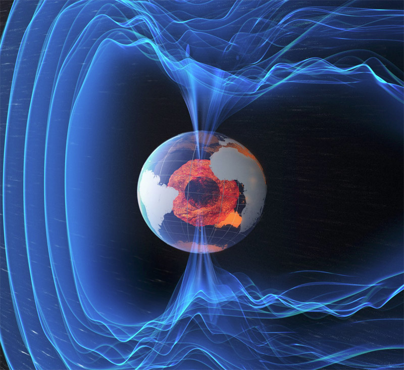
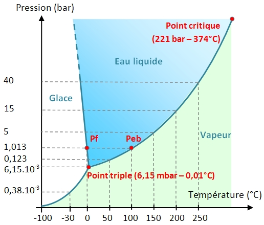
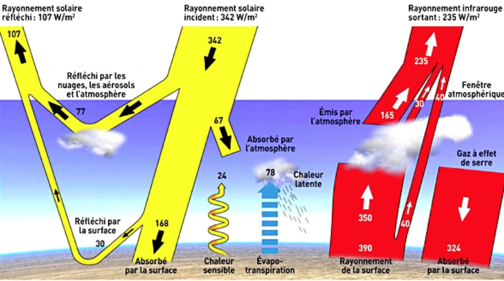
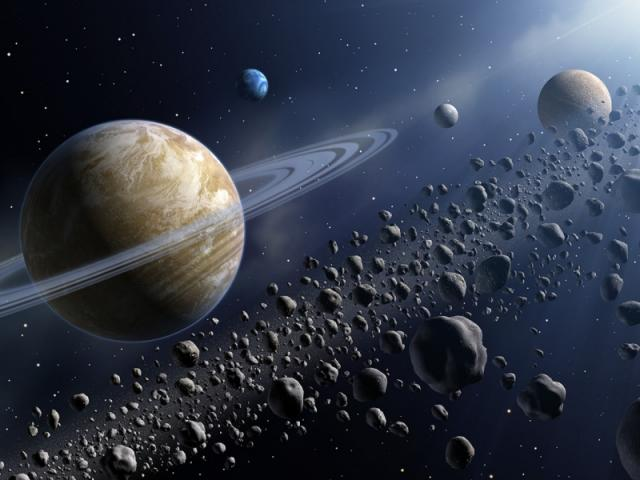
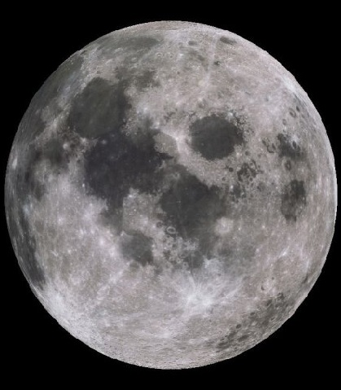
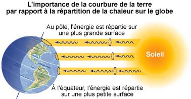
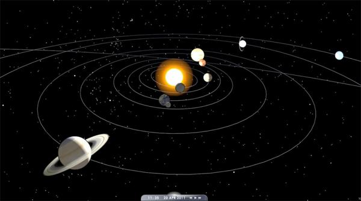

A) Distance planète-étoile
La zone d'habitabilité a été définie par Hart en 1979 comme la zone autour d'une étoile dans laquelle l'eau peut exister à l’état liquide sur une planète. Cette zone d'habitabilité dépend du type d’étoile (sa température par sa luminosité) et du rayon de l’orbite de la planète.
Les différents types d'étoiles ont été déterminés en 1910 par deux astronomes Ejnar Hertzsprung et Henry Norris Russell.
On peut maintenant déterminer le type d'une étoile grâce au diagramme de Hertzsprung-Russell :
| Type d'étoile | Luminosité (Unité solaire) | Températute (Kelvin) | Couleur |
| O | 100 000 | > 25 000 | Bleue |
| B | 1000 | 1000 | Bleue-Blanche |
| A | 20 | 7 500 | Blanche |
| F | 45 | 6 000 | Jaune-Blanche |
| G (Soleil) | 1 | 5 000 | Jaune |
| K | 0.2 | 3 500 | Orange |
| M | 0.01 | < 3 500 | Rouge |

- d est la position d'habitabilité en unités astronomiques (UA)
- L étoile est la luminosité de l'étoile en unité solaire
- L soleil (constante) est la luminosité du soleil en unité solaire = 1
Voici une courbe représentant La ligne de la zone d'habitabilité avec des exemlples d'étoiles et de planètes, il a été réalisé avec le logiciel GeoGebra.

B) Propriétés de la planète
Sur la planète 3 conditions physiques sont nécessaires à la vie:
- Planète tellurique
- Atmosphère
- Champs magnétique
En effet, une planète tellurique est nécessaire au développement de la vie car une planète gazeuse n'offrirait pas un support solide au développement de la vie.De plus, une planète tellurique doit offrir une composition du noyau de la planète telle que du fer (Fe) et du nickel (Ni) à l'état liquide afin de créer un champ magnétique qui protégera les êtres vivants des particules chargées de l'espace et de l'étoile.

Sur cette planète tellurique, une atmosphère peut également s’avérer nécessaire. Une atmosphère peut changer la température de la planète notamment grâce à l'effet de serre. Sachant que la température est une donnée importante de l'apparition de la vie une atmosphère sera parfois un critère crucial.
La densité de l'atmoshpère ou pression atmosphérique influera sur la présence d'eau à l'état liquide.

Ce diagramme présente les phases de l'eau, on remarque que l'état de l'eau dépend de la pression et de la température, c'est un exemple prouvant que l'atmosphère est un critère très important.
Une planète doit avoir une masse suffisante pour retenir une atmosphère.
Donc la vie nécessite de l'eau, qui elle-même nécessite une température et une pression adapté pour être à l'état liquide (determiner avec le diagramme ci-dessus)
La température d’équilibre est la température moyenne que fournit une étoile à une planète sans compter les effets de l'albédo et de l'effet de serre ,il faut la déterminer pour savoir si il peut y avoir de l’eau à l'état liquide.
On sait que:
L'énergie reçue = l'énergie émise
Pour modéliser cette équation ,on émet le fait que le soleil envoie un disque d’énergie sur la planète de forme sphérique.
Donc on a :

- σ Constante de Stefan Boltzmann (≈5.67×10-8 W.m-2.K-4) relation entre la puissance et la température rayonné par un corps
- F (constante pour chaque planète) Energie à la surface de la planète envoyé par l'étoile en W/m²
- Te Température d’équilibre en Kelvin (K)
- (πR²) calcul de la surface d’un disque
- (4πR²) calcul de la surface d’une sphère
- R le rayon de la planète ,rappelons qu’il doit être convenable pour retenir une atmosphère et être tellurique.
résolution de l'équation :

Donc la température d’équilibre de notre planète ,sera la quantité d’énergie envoyée par l’étoile sur la planète , sur 4 fois la constante de Stefan Boltzmann le tout puissance ¼ (ou racine carrée de la racine carrée).
Comment déterminer l'energie à la surface de la planète envoyée par l'étoile ? (F )

Avec d'après la loi de Stefan-Boltzmann :

- F' flux d’énergie de surface (W/m2)
- T température de l’étoile (en Kelvin)
- R' rayon de l'étoile (en km)
- D distance planète étoile (en km)
N'oublions pas que l'albedo d'une surface est son pouvoir réflechissant, l'albedo de la surface d'une planète peut donc baisser considérablement sa température moyenne
De même, l'effet de serre lui retient les rayons infrarouges à la surface de la planète ayant pour effet de la réchauffer.
On appelle tous ces procédés de circulation de l'énergie qui se transforme en chaleur ,le bilan radiatif:

Exemple du bilan radiatif de la Terre, en Jaune l'effet de l'albédo et en rouge l'effet de serre.
C) Influence du milieu
Toutes les propriétés de la planète (taille, présence d'atmosphère, distance planète-etoile, vitesse de rotation, présence d’eau liquide,...) auront une influence sur les êtres vivants qui vivront à sa surface, ce qui signifie que les extra-terrestres peuvent être très différents des êtres vivants sur Terre.
De plus, des éléments chimiques indispensables à la vie comme l’eau peuvent êtres apportés par des éléments extérieurs à la planète comme des comètes ou des météorites.

La vie pourrait être aussi différente si la planète possède de nombreux satellites ou aucun. En effet, par exemple, la Lune influence la rotation de notre planète. Sans elle, l'axe de la Terre serait beaucoup plus penché, cela ferait qu’une partie de la surface de la Terre serait plus exposé au Soleil créant des changements climatiques auxquels les êtres vivants devront être capables de survivre.
Par exemple la Terre a une inclinaison actuelle de 23.4 degrés, tandis que l’inclinaison de la Terre sans la lune serait d'environ 85 degrés.
La manière dont va évoluer la vie dépend aussi de l’endroit où est situé la planète. Par exemple si la planète se trouve plus près ou plus loin de son étoile, son cycle jour/nuit peut varier créant ainsi des différences de température à la surface de la planète.
son système de rotation peut aussi influencer le développement de la vie ,prenons par exemple l’orbite synchrone, qui expose seulement une face de la planète à l’étoile, il existe une multitude de systèmes d’orbites pouvant tous influencer la force de marée et la température de la planète.
